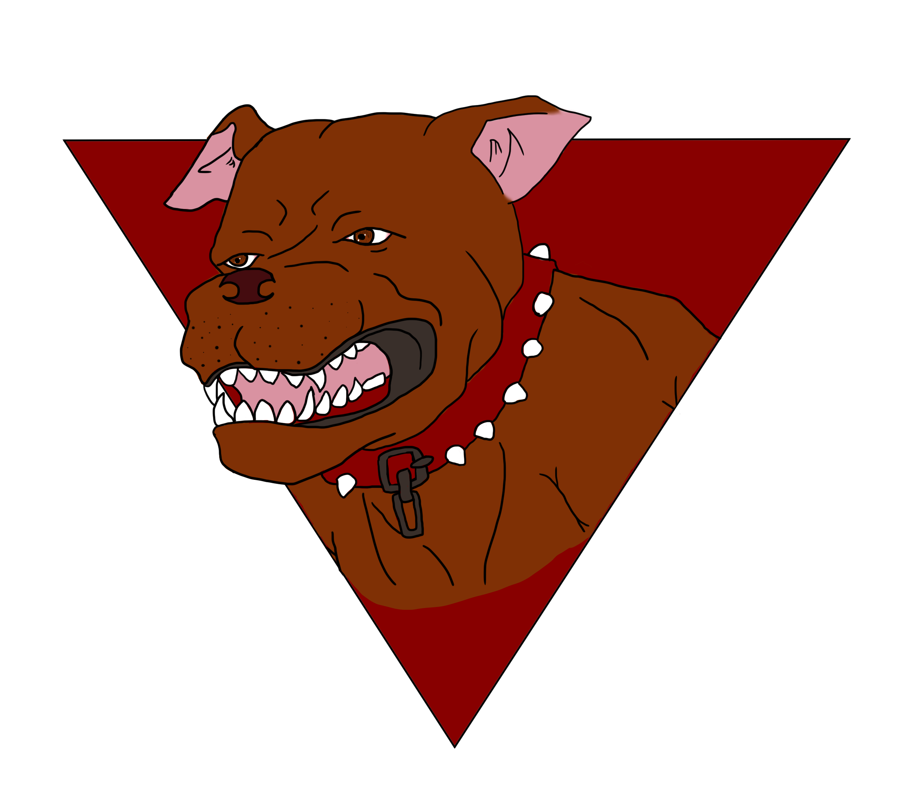
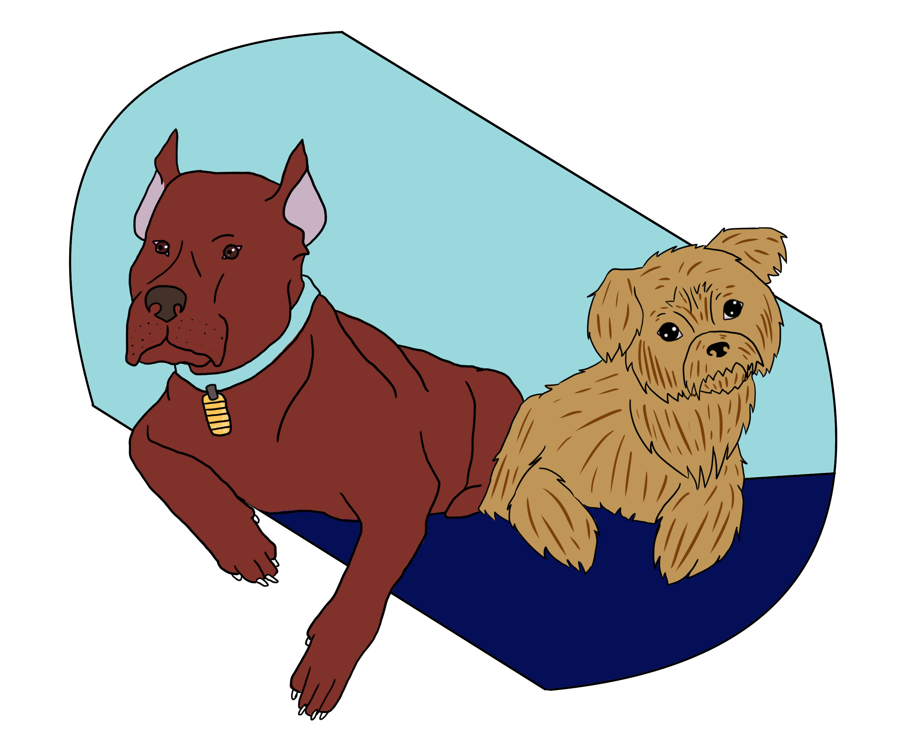
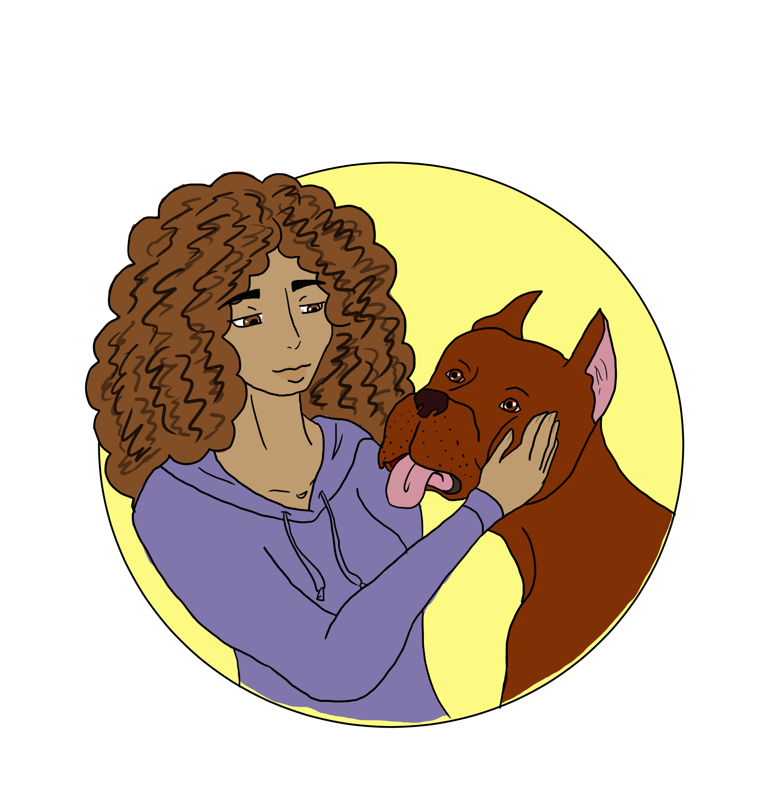

Each year about 1.2 milloin dogs are Euthanized and approximatly 40% of those are pitbulls. In shelters there is a large flow of pitbulls coming in, but not much of one going out. On Average 30% of dogs in shelters are Pitbulls and in larger cities it can be up to 40%-65%. About 75% of municipal shelters euthanize pitbulls immediately upon intake. There is also a 93% euthanization rate for pitbulls, with about 1 out of 600 finding a home.
Illatration by Brittnie Garcia
The cause for this is over breeding of pitbulls and strict Breed-Specific Legislation laws (BSL). BSL laws have put pitbulls as one of the most banned or regulated "breed" of dogs even though pitbulls aren't even a breed. Pitbulls are a colection of different dog breeds under the bully catagory or mixed breeds in those effects. This makes it hard for people to adopt pitbulls because it can be considered illegal to own, sell, breed, or transport pitbulls without proper documentation or proof that the dog is not dangerous. The other cause is irresonsible breeding of pitbulls. Pitbull females can have large litters from 6-12 puppies in each. So not having a pitbull nuetered, like for any other dog, causes for over population of them on the street and in shelters.
Illatration by Brittnie Garcia
Ways to solve over population of pitbulls in shelters is to neuter your pitbull, as well as adopt them from shelters. Like any other dog you should do reserch on the shelter and dog that you decided to adopt and decide if it will be a good fit for your lifestyle or family dymanic. It is true that not all pitbulls are the same and some due to health or mental conditions need to be euthanized. However, like other dogs, pitulls can make great loving pets, especially if they get the proper training and socialization.
Illatration by Brittnie Garcia